VirtualBox <<
Previous Next >> IPV6
IPV4
設定VirtualBox網路
1.新增一個網路設定
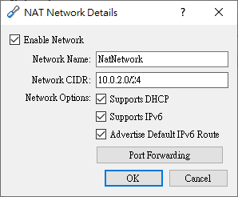
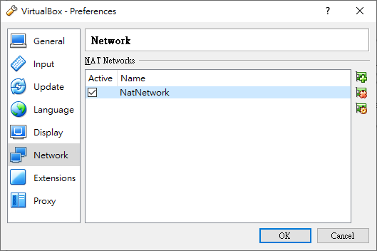
2.設定IPv4和IPv6，Guest IP透過ifconfig查詢
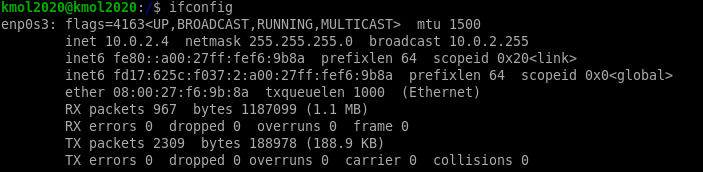
IPv4設定
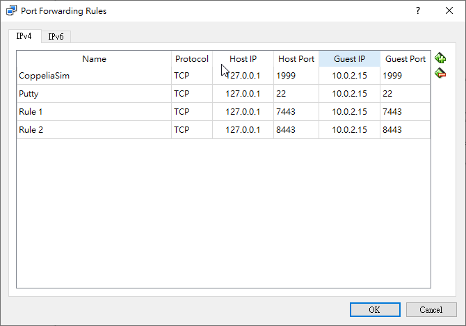
IPv6設定
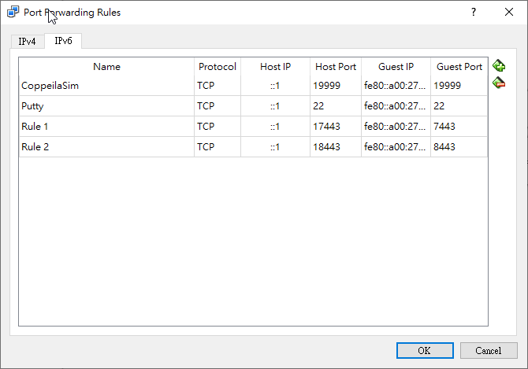
IP 查詢
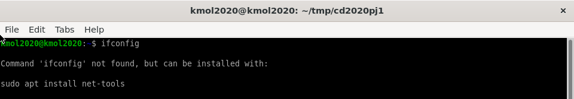
2.跳出尚未安裝net-tools的話請安裝net-tools
|
1
|
sudo apt install net-tools
|
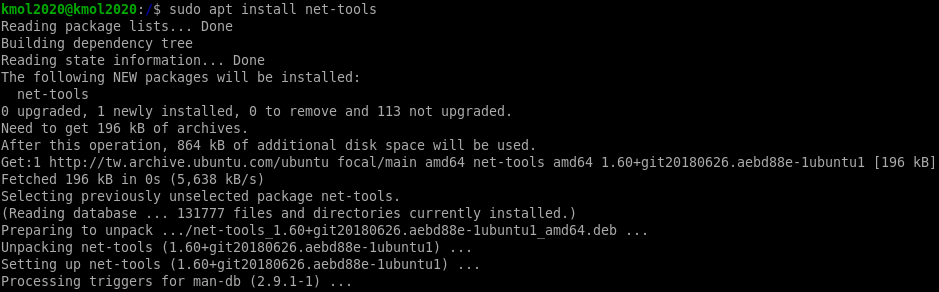
若在IPv6環境下有跳出網路錯誤
IPv6環境設定是否正確
請到 /etc/netplan 目錄下檢查 00-installer-config.yaml 檔案內的設定
|
1
2
|
cd /etc/netplan
sudo vi 00-installer-config.yaml
|
00-installer-config.yaml
|
1
2
3
4
5
6
7
8
9
10
|
# This is the network config written by 'subiquity'
network:
ethernets:
enpes3:
dhcp4: true
dhcp6: true
nameservers:
addresses:
- 2001:b000:168::1
version: 2
|
編輯完成後:wq跳出編輯並儲存，並更新netplan設定
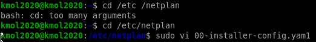
proxy問題
請到 /etc/apt/apt.conf.d 目錄下檢查是否有proxy.conf檔案，若沒有，請用新增(直接用vi編輯器開啟proxy.conf就會自動新增)
|
1
2
|
cd /etc/apt/apt.conf.d
sudo vi proxy.conf
|
proxy.conf的檔案內容
|
1
|
Acquire::http::proxy "http://[2001:288:6004:17::填port號]:3128";
|
新增完內容後要更新apt
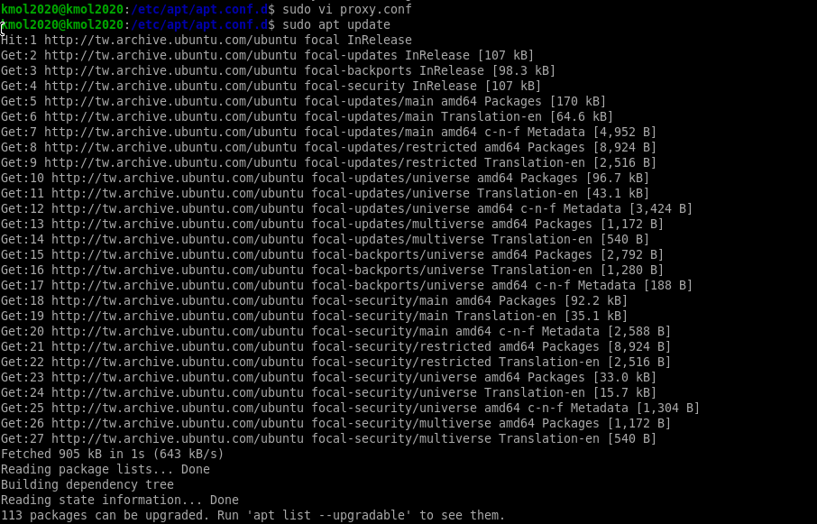
網路設定完成後即可啟動wsgi.py
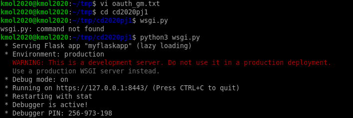
開啟網頁畫面
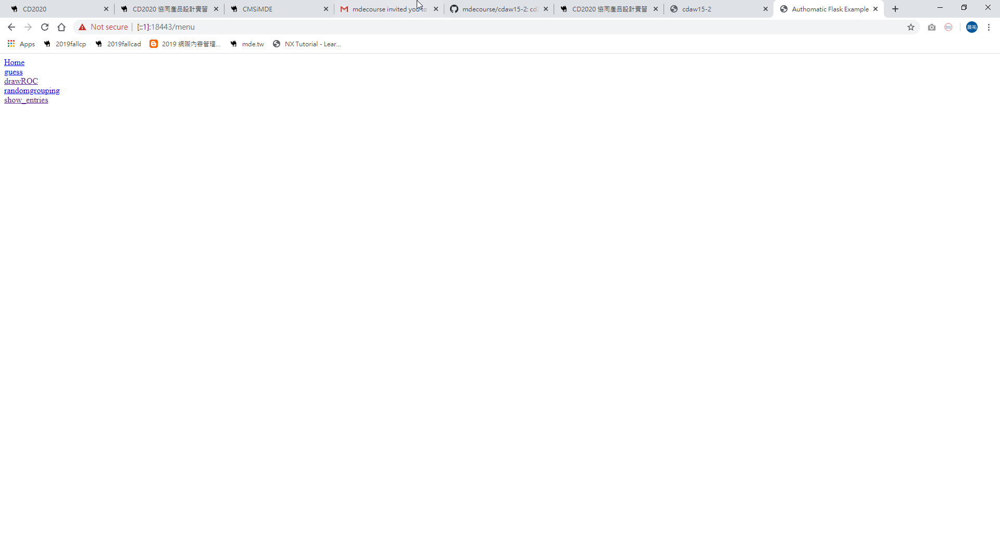
網站內的國旗畫面
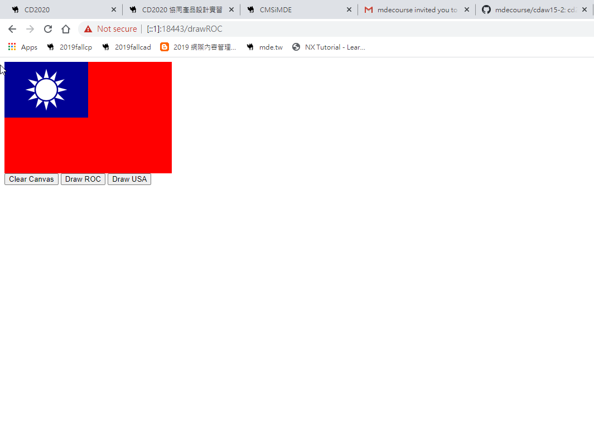
VirtualBox <<
Previous Next >> IPV6